来源：https://ipi8vs0wf5.feishu.cn/docx/A3YxdRHANosYz0xIo6zcdgcCn6f
2024年3月，我在广州生财馆里问了涛哥一个比较傻的问题。
读书写作赛道可以继续做吗？
涛哥说，不要问他这个问题。
【在这里，你们可以先想想读书写作赛道，有没有市场需求？还能不能做？】
接着，涛哥问我们在场的所有人。
你们觉得什么课程，可以卖100年以上？
在场的人，你看我，我看你。
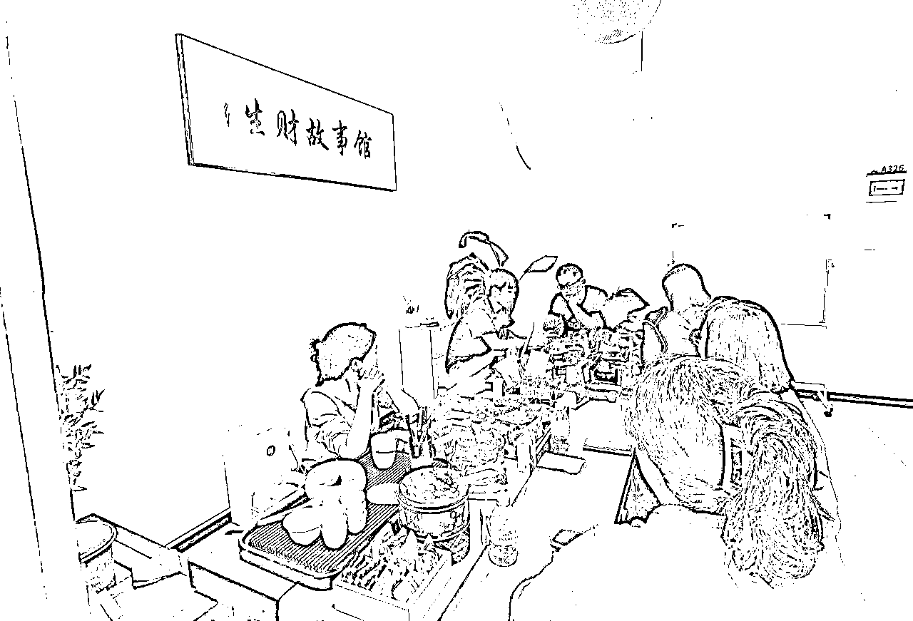
涛哥说，是音标课。
是哦！
雪梨老师的英语音标课，卖得很好，营收上千万的。
同样的，中文的，也有26个字母，汉语拼音。
从这个底层逻辑来看，读书赛道可以吗？
写作赛道又可以做吗？
肯定是可以的。
并且，这个是有着【长需求】的。
我再想想，生财圈友也有很多大佬靠读书写作出圈的啊！
粥左罗老师，Scalers等嘉宾，还有明白老师等人。
我自己似乎也是靠读书写作赚到人生中第一个10万、50万……
甚至，
我人生第一篇获得文化领域的特等奖
第一篇获得1000元青云计划奖
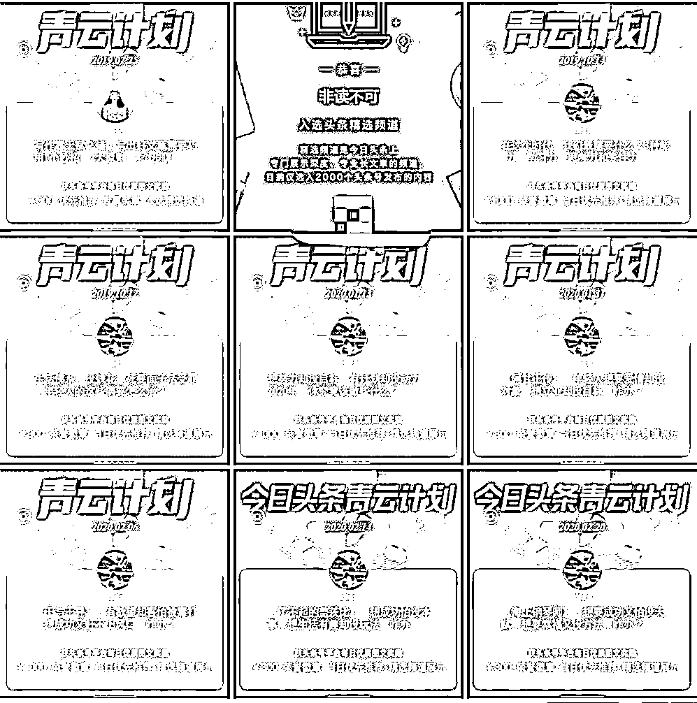
第一场收费型读书会
我还在自己的读书会中，遇见现在的投资人
……
如今，我怎么可以过河拆桥？
回过头，我还质疑读书写作这个赛道，还能不能做？
去年，我还All in做小红书中的读书写作博主赛道？
一年多时间，我涨粉4.4万，变现20多万。
所以，我在自我质疑的同时，想到我与涛哥第一次见面。
涛哥说我，不再是新手，而是“老江湖”，赶紧去写精华帖子。
好吧！我在此努力一把。
我把我所有知道的，读书写作赛道能变现的方式和具体做法，无保留地分享给在坐的各位。
希望你们有所启发。
在这里，我先给新手特别强调一件事：
别以为你读了几本书，随手一发，就能涨粉。
有了粉丝，就能变现。
这是不可能的事情。
想通过小红书做读书博主涨粉变现，你需要根据一定的“科学”原来。
最好的方式是，你要先想清楚变现方式。
下面，我给你们盘点读书博主常规的几种变现方式。
我自己的4万多粉的号，就是用引流变现的方式。
因为我本身在读书写作领域摸爬滚打6年了，也写过各种拿到稿费的奖项，有分享的经验和干货可以分享。
这种变现方式【优势】在于
低粉高变现。我的账号，大概在几百粉丝时，就变现好几千了，甚至上万了。
【缺点】是引流是平台不支持的变现方式，新手容易限流和封号。
所以，我一般也不建议新手走这条铤而走险的路。
取而代之，我们可以用相对委婉的方式。
比如，董小姐在成长，这个账号。
4月新开素人号，日常就不露脸直播。
一个月涨粉1000多，店铺的1元引流干货包也买出几分。
399元的一年的共读会，也卖了48份。
日常还带货书、自拍杆等等。
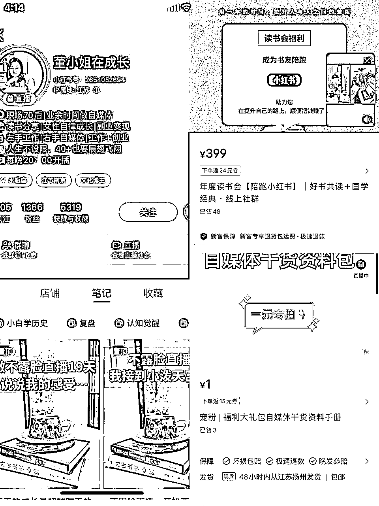
这个账号，是我随便找到的。
类似的新人，新手，快速涨粉变现的账号还有一大堆。你们去搜索一下，就可以看到。
这种方式，也是有手就能做。
做法如下：
做法是打造家居美学。
变现方式是直播带货和店铺课程引流
这个博主的商业模式，我们也是可以学的。
变现方式多，空间大，
重点是！
操作难度也不太懂。
你稍微用心布置一下家居，修图，调暖色，加选好产品就可以。

这种变现方式，有粉丝量，才更吃香。前期需要熬得住。
变现方法：直播带货，赚佣金和出版社给的推广费
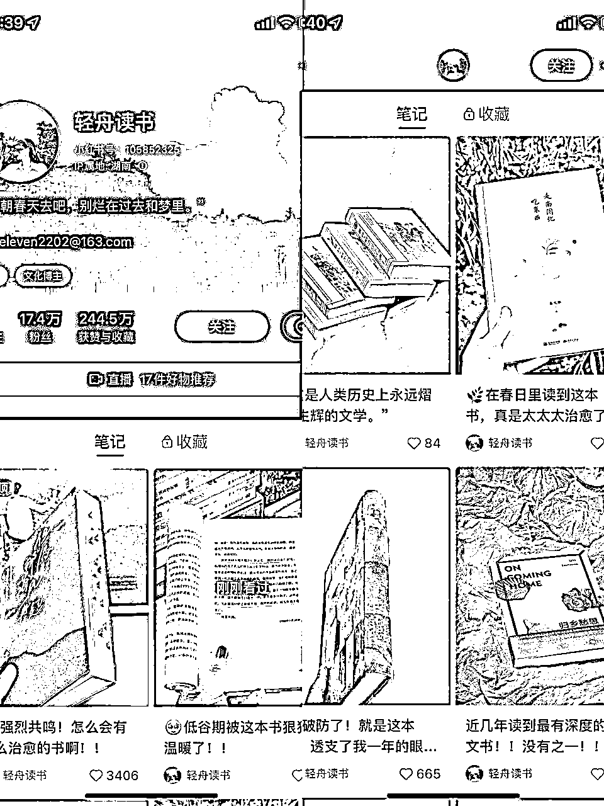
一般来说，做读书博主爆款选题都是一年靠做读书赚收入多少或者说涨粉多少。
这是小红书读书博主的爆款逻辑。
但这个博主是走在相反的方向。
他的风格是
做读书博主一年，我拒绝什么。我坚守什么
来赢得粉丝的喜欢。
所以，如果你也能特立独行，可以尝试这种做法，涨粉也可以。
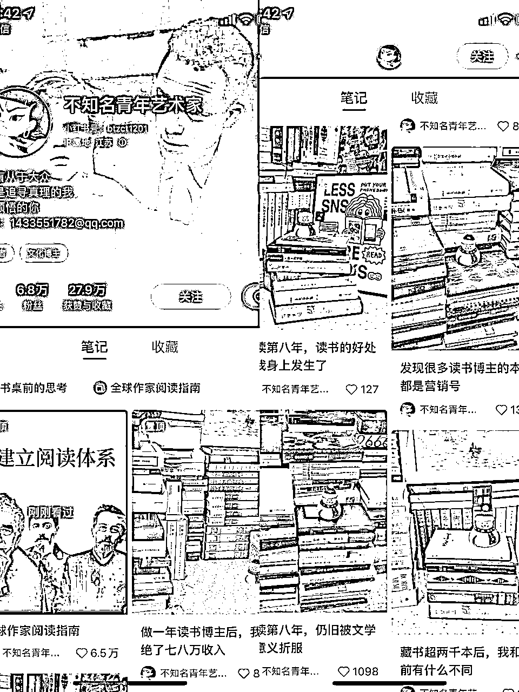
这个是人设型读书博主。每条广告费几千上万的。
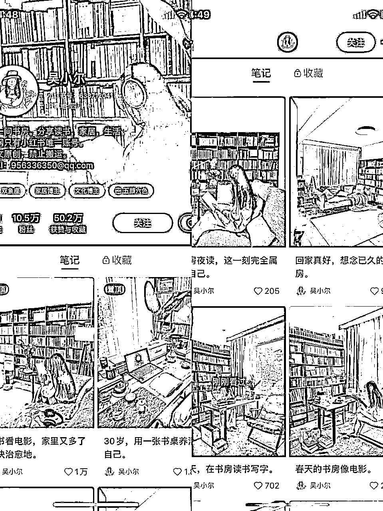
这种形式也是很好赚钱。
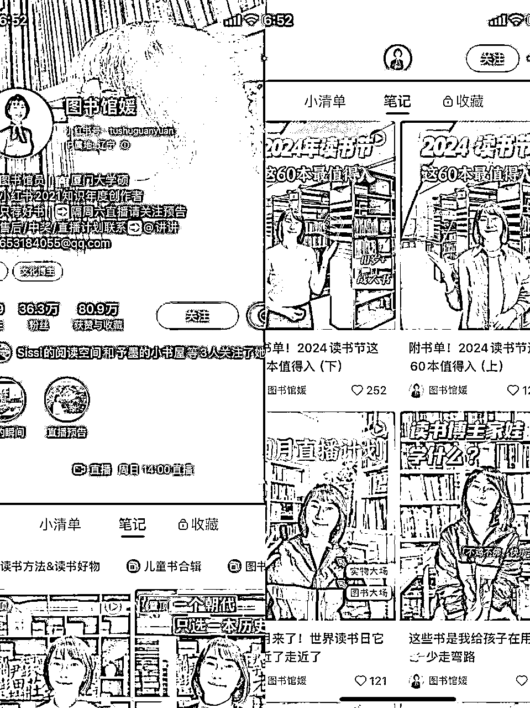
类似的读书博主变现案例，还有很多。
我无法一一盘点。
但我可以给你们总结读书博主的变现方式，逃离不出这三种。
1.内容引流，卖课程， 卖读书会，做知识付费
2.卖书（分为笔记带货和直播带货）
3.广告变现（出版社给的稿费和家居、数码产品的广告费）
读书博主的变现方式，基本就这三种。
接下来，就看你自己如何做。
1.你擅长什么
2.你手里的粉丝量有多少
准备一个手机号，一张身份证，开始养号。
先点发现页——读书类目
你开始大量看别人写的读书笔记。
有空就刷一下，大概半小时刷一次。
反正，你当成日常没事，使用小红书，那样的刷。
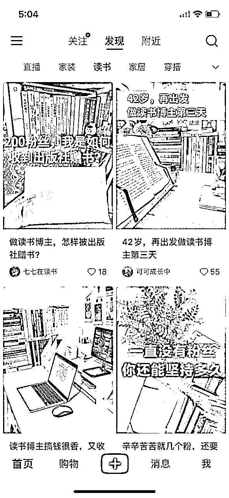
头像:我建议直接用真人头像，背景图也是可以
昵称：参考公式
人设：
写清楚你是谁？在做什么？能给大家提供什么价值？以及你的价值主张是什么？
设置背景图和发布瞬间，并想清楚封面风格是什么。
没有人会通过你的邋遢外表，认识你的有趣灵魂。
这也是我们要把封面图拍得好看的原因。
就算你的内容写得再好。
封面做不好，点击率有限，也是功亏一溃。
如何做好封面图？
下面，我把我多个账号的做图经验无保留的分享给你们。
我的擅长点在于写作。
所以，我把所有时间都放在写笔记内容。即我在图片花的时间，非常少。
你至少要看同类博主10-50个账号。
然后，同类博主用黑色。你就白色调。
大家都在用简约风。你就用复杂风。
为什么我的封面会用复古风？

因为我去年，发现同类博主都是用奶油风。我就换个思路。
至于，我们为什么要这样做？
底层原理，我可以告诉你们。
因为小红书是两列展示在发现页。
唯有你的封面图【异军突起】。读者才会点击。
这个就是流量密码。
如果你不懂得这个原因，学再多摄影技巧都没有用
1）书桌拍设
【技巧】参考其他博主的摆法
适当搭配蜡烛、文具、台灯、花等等。
一次摆不好，就多次布置
2）图片布局
小红书的布置是3:4
拍摄可以斜拍，也可以用人像模式
主页，上空尽量保持1/3构图
更有空间感
也方便在封面图写标题
3）修图
滤镜：我常用的是鲜暖色。
曝光100
对比度-50
色温30
总之
你根据当下拍摄光线做调整就可以。
4）怎么拍书籍
书单对齐斜拍
俯拍书籍封面
手拿书侧面拍
拍书的内容
5）真心话
无论是在拍摄上还是做读书博主的写作过程，最重要的一步是多拍，多写。
不会拍，就先看别人如何拍。
再看不出，就找个老师，花点小钱，学一下，问一下，进步会更快。
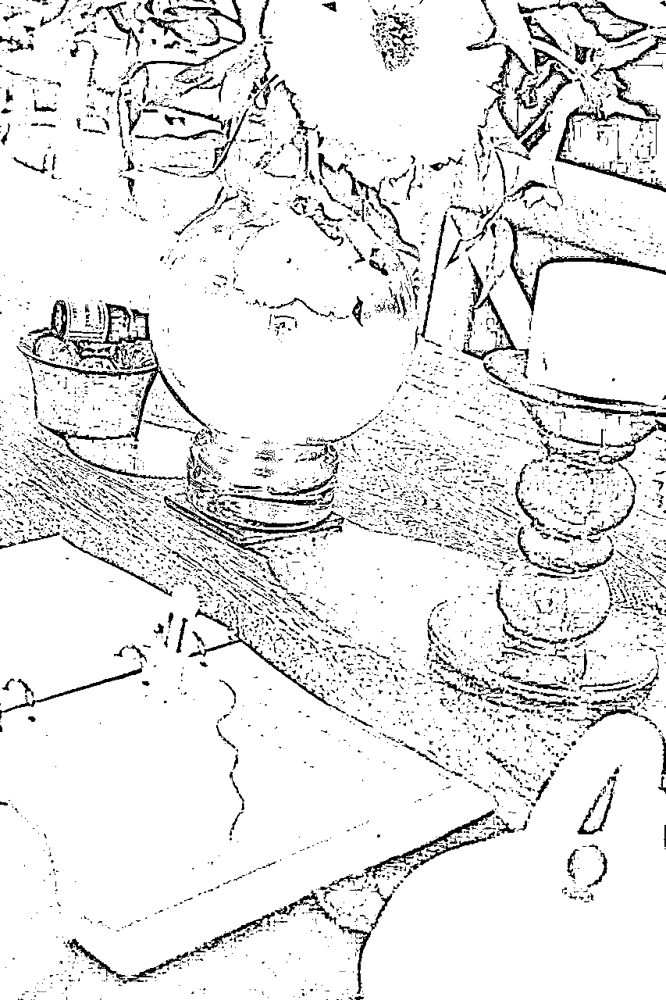
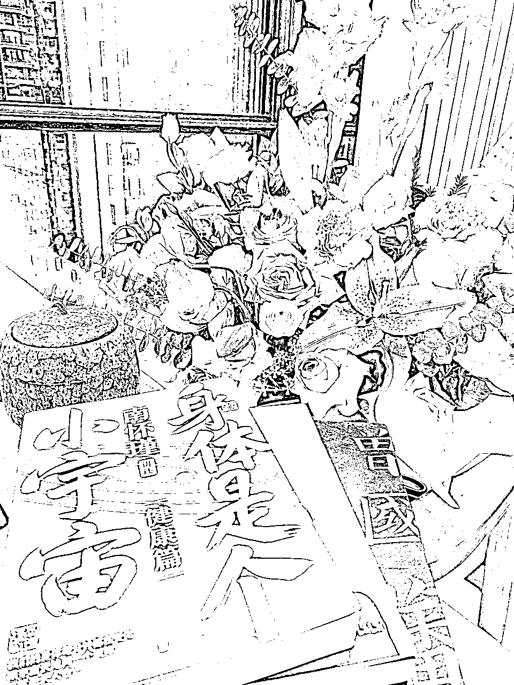

这些都是我们拍出来，验证过，相对有网感，用户喜欢的图片。
做读书博主，你也许暂时无法给自己一个大书房。
但你至少要给自己布置书桌。前期，你不需要大费周章，花很多钱，去布置。
但你要因地制宜。
我是一位省钱的抠门汉。
我没花几百元去买一张书桌。
而是我从家里逛了一圈，发现客厅有一张闲置3年多的桌子。这张桌子还蛮贵的。
据说一整套下来，花了近5w。
我爸说，这是红木，可用一辈子……
我因地制宜，随便 摆放几本书和一台电脑。
刚开始，我怎么拍，怎么不好看。
你们可以去翻看我之前的笔记，早期还有这种桌子的丑照。我尝试了四个角度后，发现当前这个角度拍照蕞好看。于是，我就把拍照角度固定下来。
接下来，我修图。
基于我是特别懒的人。
我没用任何修图工具。
所以，我直接用苹果手机的原相机修图功能：
用鲜暖色——调对比度——饱和度——光线就够定了。
拍图+修图=我用不到5分钟。
我也没有刻意花钱去买。
唯有一件用品，我认真选择，那就木质【阅读架】。
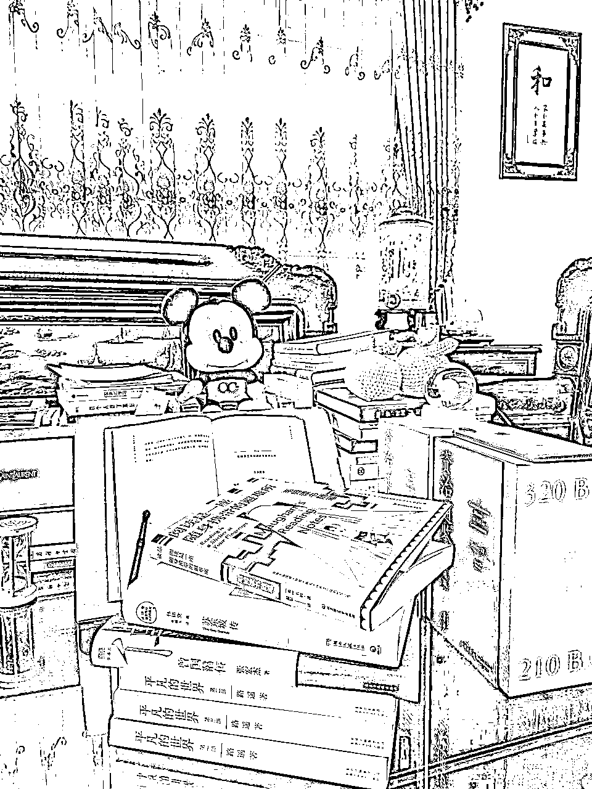
然后是主体部分【书】
我也没有刻意花钱去买，大部分书是出版社编辑给我免费寄送的。我前面的笔记分享过了，
2018年，我开始学写书评，做读书博主。
我不仅实现纸质书自由，而且还有稿费。
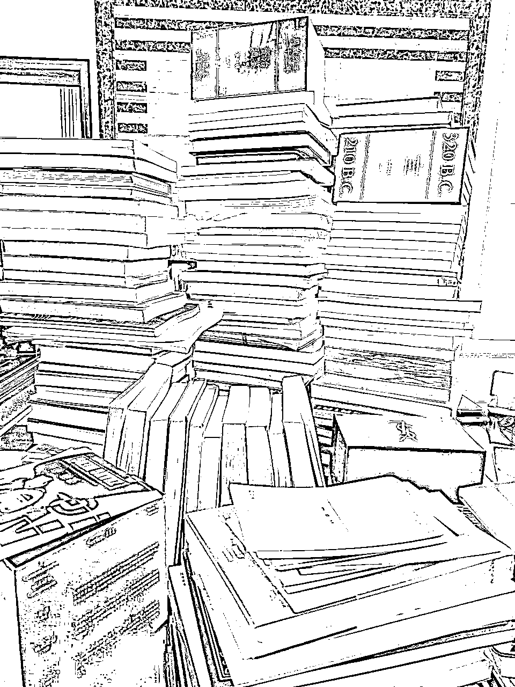
接着，就是一些小摆件。我也没买。
🍊手工钩织橘子，是老妈钩的。
🧸米奇娃娃，是家里的。
🎄圣诞树礼盒，是我准备给家里3个侄女。
以上就是我的书桌～简单、独特又有氛围感。
在列出自己平时的关注点
例如，我会关注读书、写作、成长、自媒体、赚钱、创业等。
接着，你可以尝试搜索对应【关键词】。以读书为例，
你在搜入框输入【读书】，就会出现。
在二级目录中，你会看到相关话题。如读书笔记怎么写等话题。
你都可以写。
接着，你可以根据最新话题，选出自己能写的选题。
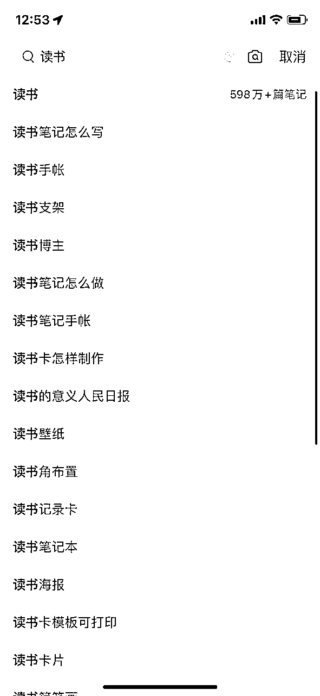
第二步：输入关键词
看搜索栏：找到更多相关的关键词

猜你搜索：展示你搜索出来的关联词
搜索发现：你可以蹭平台热点
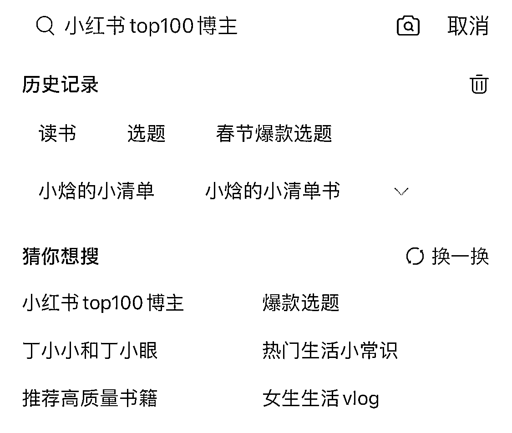
做法如下：
1.找到2W内、3-5W丝、5-10W粉丝，甚至10万粉丝大博主。
2.刷对标的标准的主页，留意他们在写什么系列内容和爆款笔记是什么？
按照这个方法，你是能找到近百个爆款选题的。
在这里，我想送给你们两句话。
爆款选题是可以重复的。
因此，你最重要要找到【低粉爆款笔记】。
即粉丝量不多，但账号中突然出现几万点赞的爆款笔记。
这个选题，你就可以去写一次。
模仿低粉爆款笔记的选题，比你自己瞎写笔记，出爆款的概率高得多。
举个例子，这个账号200多粉丝，但这篇笔记2万多点赞。
我们看到这样的笔记后就是可以分析。
1.为什么这个选题爆？
2.为什么这篇笔记爆了，但无法涨粉？
3.如果我们重新写这个选题该如何优化？

如果是我，在此写这个选题，我会这样做？
1.挂上余华老师新手《十八岁出门远行》的新手链接，赚佣金
2.用小号在评论区引导关注。
1⃣️【小红书历史、传记爆款文章调研】
飞书链接： 密码：k1/3d974
2⃣️【小红书读书博主前500名】
屋屋解说：可学习，可看整个读书赛道的发展情况
飞书链接： 密码：h-8~9~+5
模板1⃣️心理、经管和社科类
1.描述工作或者生活中遇见的问题或者现象
2.这本书给出什么具体方法
3.作者的背景是什么？
4.你的实践心得是什么
5.从点到面，你对整本书的评价和看法分别又是什么。
模板2⃣️技能、工具和干货类书评
1.开头：你经常遇见什么问题，会怎么处理？结果如何？
2.在什么情况下，你遇见这本书？作者是谁？书中核心思想是…提炼出打动你的1-3个点
3.看完书，你的收获是
4.你的评价和为什么分享？
模板3⃣️文学、小说、散文类书评
1.这本书给人们带来什么新的人生体验。
2.作者是谁？在什么背景下，写了这本书。
3.书中的故事、人物、情节分别是什么？
4.哪些金句，打动到你？
5.读完这本书，你联想到什么？有什么感悟。
新手如果看完这三个模板，还是不知道如何写，那就直接套用这个模板
模板4⃣️出版社编辑青睐的常规书评写法
（套用模版，也是万能模版）
破题—引题—作者介绍—书籍封面—逻辑主线—亮点解读—立意升华
破题：常见的写法有痛点场景描述法、故事法、生活案例、金句、提问法等。
引题：同一句话概括全书内容
作者介绍：谁写了这本书？有什么背景？
逻辑主线：这是一个难点。很人容易写不好。
❗️分享两个我常用写作框架。
✅框架A：what why how
1.现象：分析现象是什么?
2.问题：为什么会发生这样的事情?
3方法：如何解决？
✅框架B：SCQA结构
参照：《金字塔原理》
S: situation场景、事实是什么
C: complication实际情况与我们预期的有什么冲突
Q: question怎么办
A: answer(回答)方案是什么
思路：困境—冲突—后果—方法
有了写作框架后，你就可以提炼三个亮点了。
🔚然后写立意升华。
这是一本什么书？
为什么你要推这本书？
看完这本书，能给读者带来什么好处。
这是一个通用模板。新手前期不知道如何写书评，直接套用就好。
无论你想写任何书评，都可以套用以上模版。
模版5️⃣常用的读书笔记公式
1.作者书迷类 =如果你是 xxx
这本书如何能够拉近你和他的距离 / 这本书很特别很稀有，你看这本书能够成为蕞了解他的人
2.场景类 = 对读者所在的 空间场景 做出描述 + 针对这个场景进行 荐书 + 荐书理由
3.解决类 = 对读者的困境做一个描述 +
这本书什么分析问题 + 本书的亮点 / 读完这本书读者会收获什么
4.全书知识点、案例展示
我一般用故事叙述法
人物类：写时间、地点、经历、事件和启发
故事类：常用的框架
爆款笔记类型1️⃣
整理你喜欢的6位读书博主
写出你从这些博主身上，学到什么
【案例展示】
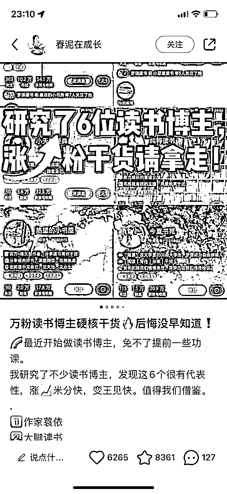
爆款笔记类型2️⃣
提炼金句，写作难度低，有还有利于自己积累素材
具体写法
🔥如果把《XX》浓缩成10句话
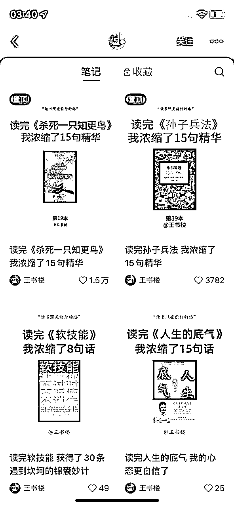
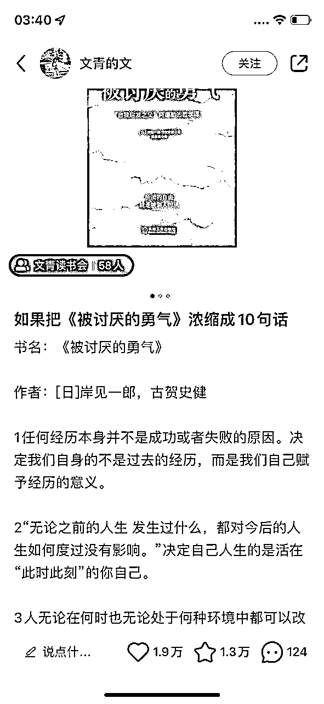
爆款笔记类型3️⃣盘点XX年，你读了多少本书
100本书也可以，20本书也可以
把书堆起来，拍照
分享书单和自己的心得
按照这套去学+记得埋爆款基因=谁写谁能爆。例如

爆款笔记类型4️⃣读书笔记+PPT引流
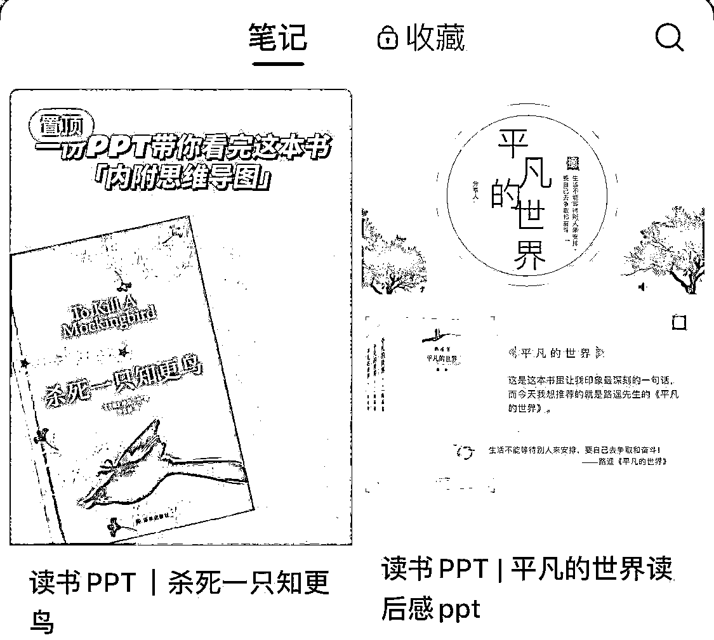
这个是我读书写作营的学员做出来的。每月也可以变现大几千。
爆款笔记类型5️⃣一个账号，专门写一本书。
这个出版社编辑很喜欢，之前有编辑花钱找我做类似的账号。
具体做法很简单，只要你有时间，就可以做。
1.仔细读一本书
2.拆解，分享笔记就可以

1.救命!
2.一整个高级住了
3.终于下手了
4.一整个爱住了!
5.绝绝子
6.家人们!
7.yyds
8.后悔了!
9.我要向全世界安利
10.任何人不知道我都会很伤心!
11.太哇塞了吧!
12.拒绝不了!
13.xxx役骗我
14.快冲啊!
15.我不允许你不知道
16.啊啊啊啊啊
17.我敢说..
18.快问爆了的/n遍的
19.答应我
20.保姆级
21.我宣布
22.中国人不少中国人
23.吹爆
24.真香
25.我先冲啦
26.挖到宝了!
27.我赌你一定..
28.天啊撸!
29.大数据把我推给
30.震惊了!惊到了!
31.我妈说/问.
32.站出来!
33.太绝了!
34.私藏
35.不会吧!还有人不知道，
36.又被夸了!
37.简直了!
38.还是没忍住
39.吐血整理
40.真是服了!
41.别拉我!
42.我久可以了!
43.我久快乐了!
44.我沦陷了
45.谁能拒绝!
46.求求了
47.回购一辈子!
48.笑不活了.
49.太可了吧!
50.有手就会
51.沉浸式.
52.封神
53.必...
54.被赞爆了
55.what !?
56.宝藏
57.emz
58.xxx真有你的
59.新手小白
60.太爽了
1.获得感
吓人、治愈、力量;决定做自己;可读性强
读到这觉得好吓人读书竟会是富人阶级的特权
读完这本书，我决定做自己了
没想到有这么大的力量胸口堵住的感觉没了
这部作品好像在催泪，又好像在治愈你。
感觉一翻页，血都渗出来了
2.热门话题
封神;日本核污水;
女性意识觉醒
明星姬发。。
我哭的好崩溃。。
后知后觉，女性头发是这样被男性凝视的.
赵和冯复婚:亲密关系不断成长和解决问题
3.指向群体
每个女孩子;历史佳作;INTP;医学生
医学生专属:
狂刷不腻的几本书!!!
真的，建议每个女孩子把福柯的书读烂
4.夸张表达
往烂了读，救命，文笔绝了
救命！这本书真的太有力量了!
今年看过的好书，我劝你往烂了读!
文笔绝了!为什么我到现在才读到这本书啊!
5.反差
我花3块钱买了一本只有25页的“书"
短短74页，怎么会每次翻开都想哭啊!
6.好奇
是谁把绝经写这么美啊?
哦原来是诺奖女作家
作者真敢写啊，关于小姐的田野调查
这本书越少人知道越好
想做好读书博主，我给你们的建议是
1.认真看这份本文的内容，能帮助你们少走很多弯路，甚至快速起号。
2.认真看这份社区公约
https://www.xiaohongshu.com/crown/community/agreement?fullscreen=true&isUnicomKing=false&themeType=default&xhsshare=CopyLink&appuid=631b64b5000000002303ba32&apptime=1700849291
3.发布文章时，用这个小程序检测，有没有违规词。http://ci.lingke.pro/
4.多看我的避坑案例分享。
比如，我这篇标题过于夸张，被判违规
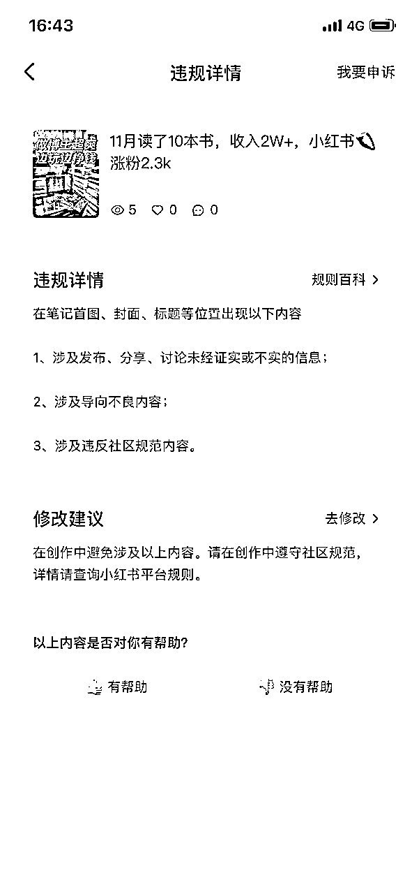
5.我看了上千个读书博主涨粉，发现80%的账号，存在共同问题是
总之，这样的账号，看起来就没有关注欲望。顶多就如菜市场的小摊主，缺少点引人入目的东西。
但在互联网中，大家的注意力是有限的。
一旦你的内容，不能吸引我，又不能给我带来价值，我可能不会再“人群中多看你一眼”。
具体怎么做？
别人只是单纯分享书，我们可以在这四个系列中输出内容。
我总结了4条爆款选题公式给诸位：
你们按着这四个方向去更新内容，就对了。
这四个方向，更有利于你变现。
⚠️记得千万不用只发读书笔记啊！
没有人喜欢一个冰冷，没人情味的小红书账号。
读书博主的重点不在于【读书】，而是在于【博主】。
博主是一种身份。既然这是一种身份，那就意味着博主是一份工作。
工作的背后是意味着要养活自己和家人。
为什么？这背后的底层逻辑是
粉丝会因为喜欢你这个人，而爱屋及乌，喜欢你分享的书。
但粉丝不会因为喜欢某本书，而喜欢你。
例如，董宇辉讲《额尔古纳河右岸》，卖了100多万册。
这是因为去年，我们喜欢董宇辉讲书。
被他的描述所感到，我们下单了。
反之，在没董宇辉讲书前，我们不会因为《额尔古纳河右岸》而喜欢董宇辉。
第一：从环境入手。
以环境衬托你。
你可以给自己准备好看的书桌和书房。
具体怎么做？我在前面的案例，已经给你们展示了。

有小伙伴可能会问我；
难道没有好看的书桌和书房，无法靠读书博主赚到钱吗？
答应是的。
毕竟，这就是流量密码。
当你书桌混乱，也没好看的家，别人却拥有，并且展示美好。
人家就能有流量，就能博取商家的眼球，自然有各种品牌合作。
你眼红不了。因为人家也很用心，用心打造书角，用心拍照，认真写完文。
而你却懒得。
这就人性和赚💰的底层密码。
做别人不能做的，吃别人无法吃的苦，你才能赚到钱。
第二：写自己成长经历
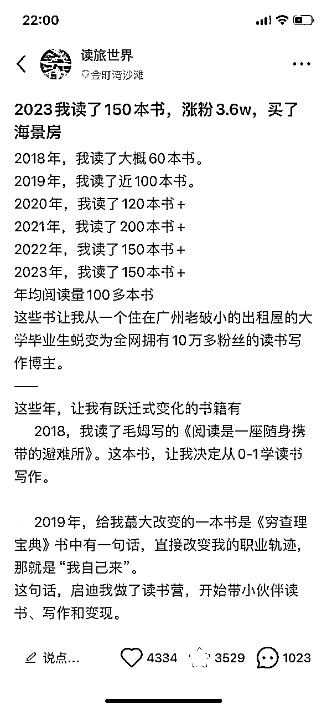
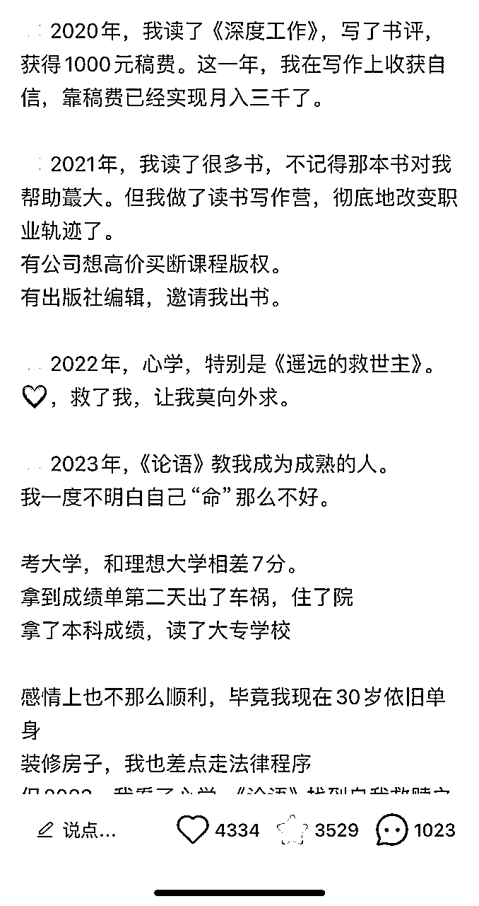
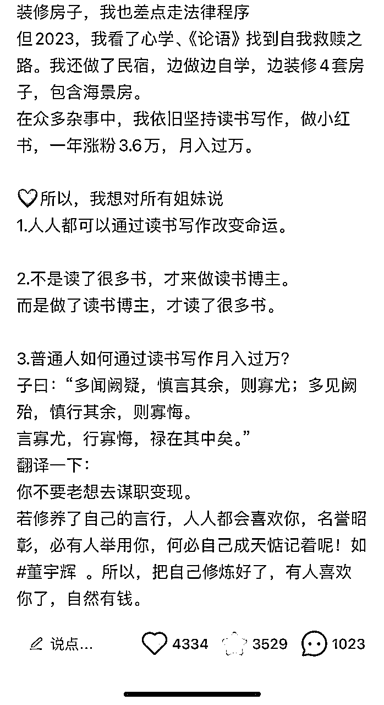
我的这篇人设笔记，复盘自己的读书写作历程，小眼睛13万，涨粉5000+。
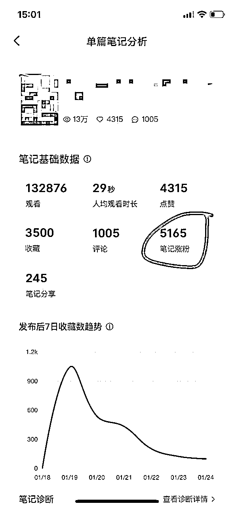
悄悄地告诉你们一个写内容的流量秘密。
写人设类的内容，容易涨粉和变现。
为什么呢？
因为读者想要的关注你这个人，与你共同成长，而不是看你干巴巴的读书笔记。
好啦！
以上就是我今天要分享的内容。
希望你看完本文，对关于如何做小红书读书博主有完全的思路。
㊗️愿你通过本文学习，能从0-1学一个能变现的读书博主账号。